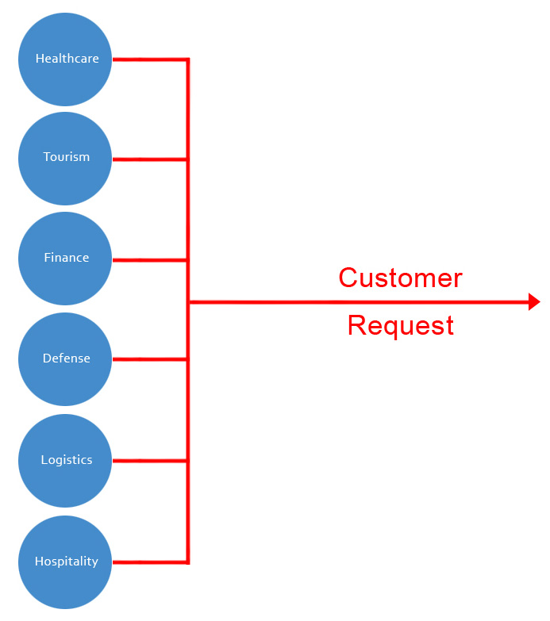
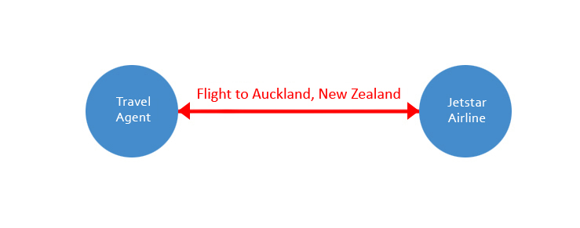
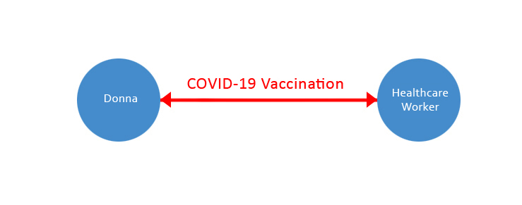
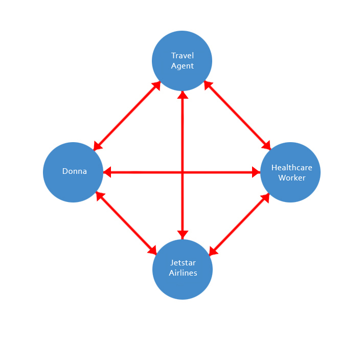
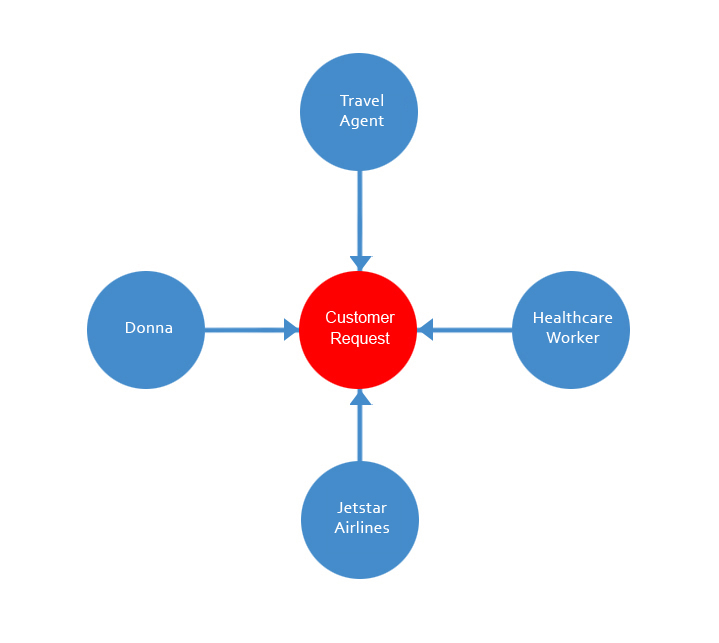

Eleutherios is a global cooperative forum or new way for people or businesses to serve one another, online.
It does this by decoupling or scaling the customer request, forum or conversation, that the vertical domain or service industry is having with one another.
Such as a Travel Agent booking a flight with an airline.
Or, a person receiving a vaccination from a Healthcare Worker.
Forum (Holiday to New Zealand) -- Service (Donna or customer) -- Service (Travel Agent or business) Forum (COVID-19 vaccination) -- Service (Donna or customer) -- Service (Healthcare Worker or business) Forum (Flight to Auckland, New Zealand, August 21, 8.05am) -- Service (Donna or customer) -- Service (Jetstar Airlines or business)
Unfortunately, this way of serving customer requests, doesn't scale or the services are too, tightly coupled to one another.
For example, the customer request or forum, between Donna and the Travel Agent, can’t be seen or managed by the Healthcare Worker or Jestar Airlines. In order to talk to them, Donna has to create a separate request or forum.
Forum (Holiday to New Zealand) -- Service (Donna or customer) -- Service (Travel Agent or business) -- Forum (COVID-19 vaccination) ---- Service (Donna or customer) ---- Service (Healthcare Worker or business) ---- Forum (Flight to Auckland, New Zealand, August 21, 8.05am) ------ Service (Donna or customer) ------ Service (Jetstar Airlines or business)
Eleutherios changes this behavior, by decoupling the customer request or forum and turning it into a service (i.e website) that people or businesses, can see or participate in.
Now, Donna’s request or forum to take a Holiday, is non-separate or can be seen or managed by more, than one person or business at a time. Including the Healthcare worker and Jetstar Airlines.
Eleutherios, provides the tools, that people or businesses need in order to have a global or multi-stake holder (SME, NGO, government) conversation with one another.
Help fix bugs or resolve issues.
https://github.com/aletheon/eleutherios-website/issues
Make a donation to the Eleutherios open source project.